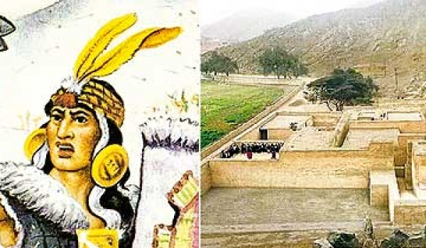

Desde Lima, Francisco Pizarro envió expediciones militares para apoyar a sus hermanos en el Cusco, pero todos estos intentos fracasaron en el recorrido hacia la capital imperial, ya que fueron atacadas por los indígenas. El cerco de Lima estuvo dirigido por Titu Quisu Yupanqui. Salió de Tambo con unos 25 000 soldados, con expresa orden de Manco Inca. En los últimos días del mes de agosto, se produjo el cerco de Lima. En agosto de 1536, el líder Titu Quisu Yupanqui tomó el cerro San Cristóbal y sitió Lima. El enfrentamiento fue reñido, y en la batalla de Atocongo, los incas empezaron a usar armas europeas, ya no tenían miedo a la superioridad bélica pero Francisco Pizarro con apoyo de sus aliados andinos logró vencerlo.
